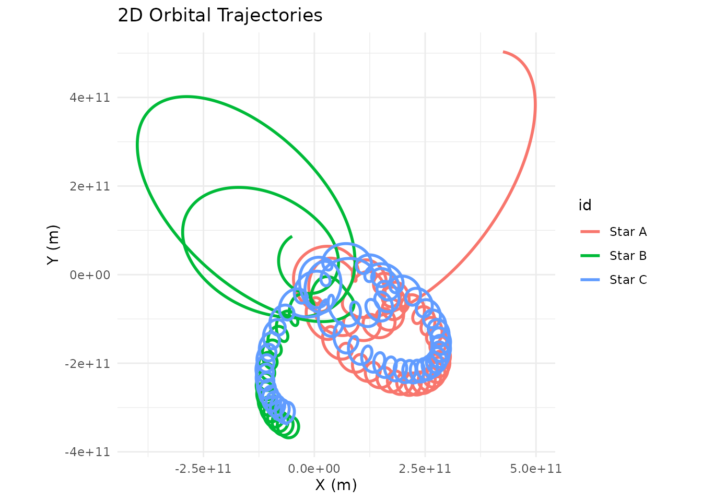

Unstable Orbits and the Three-Body Problem
Source:vignettes/unstable-orbits.Rmd
unstable-orbits.RmdIf you start plugging in random masses and velocities, you’ll quickly discover that most configurations are wildly unstable. This isn’t a bug — it’s physics. Stable orbits are the exception, not the rule.
In a two-body system, stability is relatively easy to achieve: give the smaller body the right velocity at the right distance and it traces a clean ellipse forever. But the moment you add a third body, things get chaotic. The three-body problem has no general closed-form solution — small differences in initial conditions lead to dramatically different outcomes, including bodies being flung out of the system entirely.
A Chaotic Triple-Star System
Here’s an example: three equal-mass stars arranged in a triangle with slightly asymmetric velocities. It starts off looking like an interesting dance, but the asymmetry compounds and eventually one or more stars get ejected:
create_system() |>
add_body("Star A", mass = 1e30, x = 1e11, y = 0, vx = 0, vy = 15000) |>
add_body("Star B", mass = 1e30, x = -5e10, y = 8.66e10, vx = -12990, vy = -7500) |>
add_body("Star C", mass = 1e30, x = -5e10, y = -8.66e10, vx = 14000, vy = -8000) |>
simulate_system(time_step = 3600, duration = 86400 * 365 * 10) |>
plot_orbits()
This is actually what happens in real stellar dynamics — close three-body encounters in star clusters frequently eject one star at high velocity while the remaining two settle into a tighter binary. The process is called gravitational slingshot ejection.
Troubleshooting Unstable Simulations
If your simulations are producing messy, diverging trajectories, here are a few things to check before assuming something is wrong:
Velocity too high or too low. At a given distance from a central mass , the circular orbit speed is . Deviating significantly from this produces eccentric orbits or escape trajectories.
Bodies too close together. Close encounters produce
extreme accelerations that can blow up numerically. Try increasing
softening or using a smaller time_step.
Three or more bodies. Chaos is the natural state of N-body systems. The stable examples in the documentation are carefully tuned — don’t expect random configurations to behave.
Time step too large. If bodies move a significant
fraction of their orbital radius in a single step, the integrator can’t
track the orbit accurately. Try halving time_step and see
if the result changes.
The built-in constants and examples in orbitr are
designed to give you stable starting points. From there you can tweak
parameters and watch how the system responds — that’s where the real
intuition for orbital mechanics comes from.